Stress and uncertainty
Simple, step by step repair tutorials with video, text and images.
A roadside emergency app concept with repair guidance, a diagnostic questionnaire and access to nearby professional help.
Car trouble can leave any driver unsure of what to do, especially in a stressful situation. Tool is a concept for an app that would help drivers understand what may be wrong, attempt a repair where possible, or find the nearest available repair shop. The main audience is everyday drivers aged 18 to 65.
Reduce stress during roadside emergencies. Provide clear, actionable guidance for common car problems. Build trust through transparent shop ratings and verified services.
Lack of technical knowledge. Stress and confusion during emergencies. Difficulty finding reliable help.
Repair shops want visibility and customers. Brands and dealerships want customer loyalty and branded support.
Competitors include traditional roadside assistance such as AAA and ADAC, insurance add ons and apps like Urgent.ly, HONK and RepairPal. They often lack integrated self help content and transparent shop vetting. Desk research led to four recommendations.
Simple, step by step repair tutorials with video, text and images.
A map and a filterable repair shop list with ratings and reviews.
Downloadable task videos for offline use.
Shop verification with highlighted certifications.
More drivers use their phones to find, book and learn about repairs. The app serves three groups.
Aged 18 to 65, mostly in urban and suburban areas. Pain points: stress when a car breaks down, little knowledge or tools for minor repairs, and worry about overcharging.
Independent repair shops and tool retailers. Pain points: low visibility next to large franchises, flyers and word of mouth no longer enough, and uneven customer flow.
Brands such as Audi, BMW and Toyota. Pain points: keeping up with digital change, customers switching to more convenient competitors, and adding new tools to existing processes.
The app is free for drivers. Revenue comes from the businesses that want to reach them.
Free access to repair guides, diagnostics and the shop finder.
A monthly subscription for a listing, customer requests and a business dashboard, with an optional featured placement in search results.
€14.99 monthlyPer shop, for the standard listing
An annual licence to offer a branded version of Tool to their own customers.
I mapped who would be involved: drivers as end users, repair shop representatives and tow truck operators on the service side, an admin team, customer support and data analysts behind the scenes, and certified repair shops as partners.
I mapped the driver’s route through a repair, including what happens when it cannot be completed and professional help is needed.
I broke the journey into tasks such as checking repair requirements, following instructions and finding a suitable service provider.
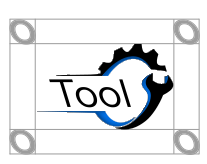
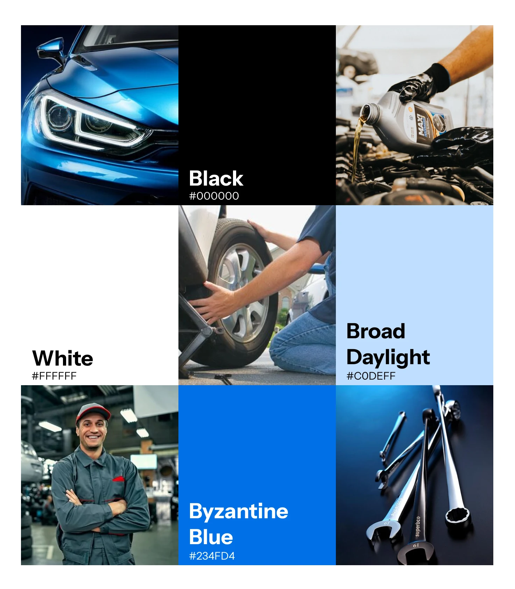
C0DEFF
0070E7
004289
F6F6F6
9D9D9D
Instrument Sans SemiBold
Repair guidance
Used for the shop name on service shop cards.
Instrument Sans Medium
Tools and requirements
Used for list rows and button labels.
Instrument Sans Regular
Follow the steps for your vehicle.
Used for dropdowns, the search bar and body text.
The prototype illustrates three routes: checking repair requirements, following instructions and seeking professional help.
A new driver signs up and adds a vehicle, then lands on a home screen with three shortcuts.
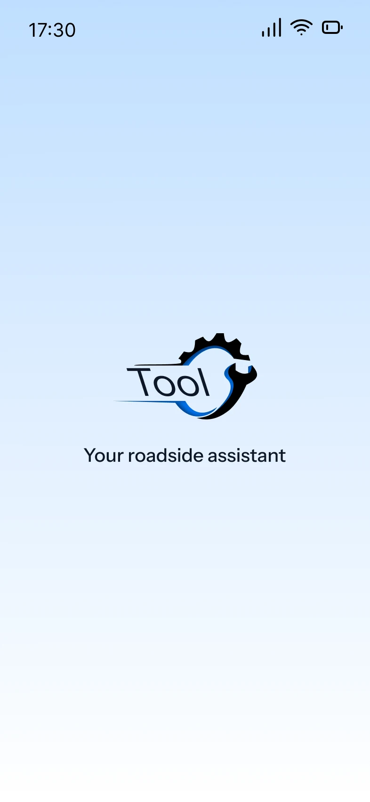
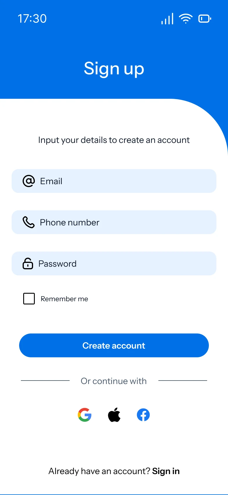
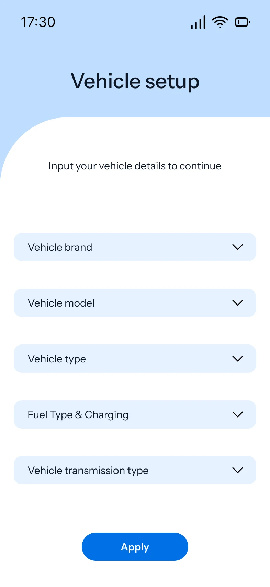
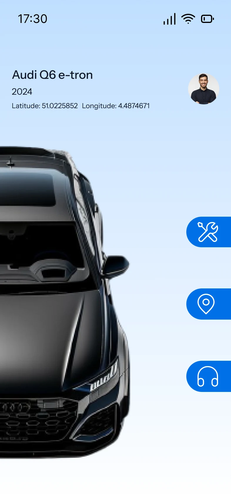
A list of common repair tasks, plus the vehicle manual with quick access to topics.
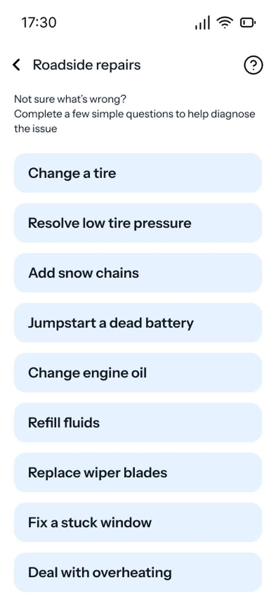
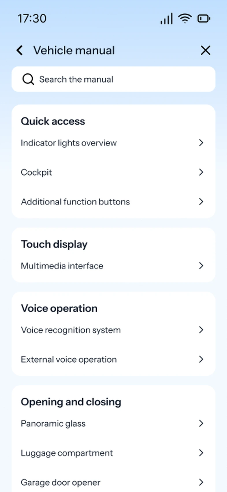
A short questionnaire leads to a diagnosis with next steps, or to a repair center when nothing is detected.
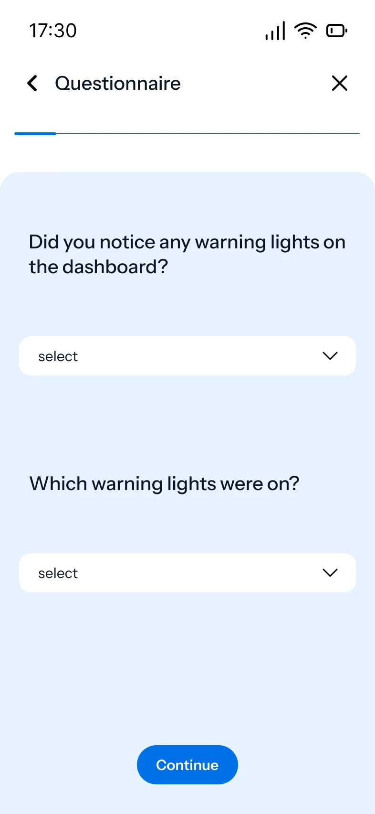
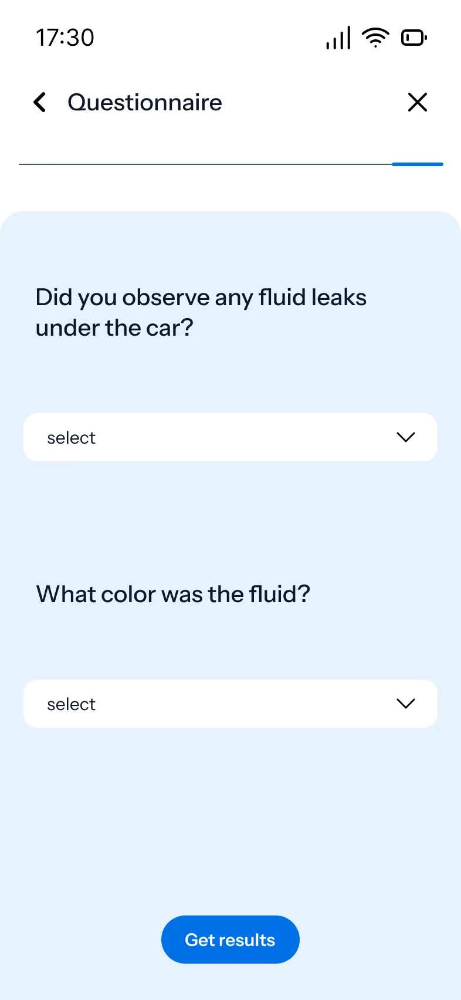
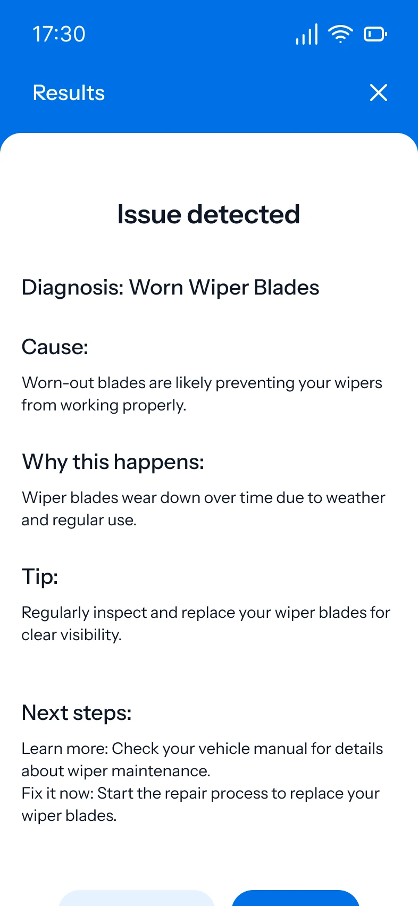
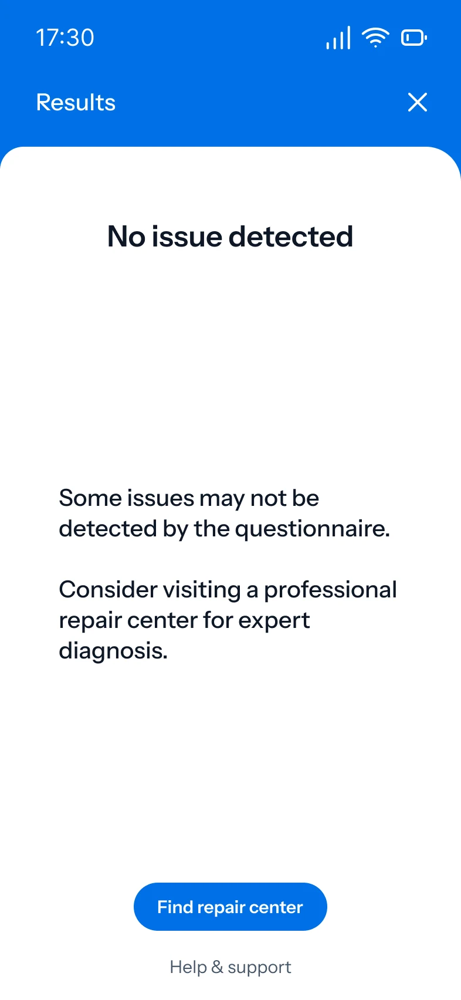
A preview lists tools, time, difficulty and skill level. Each step has a video, written instructions and images.
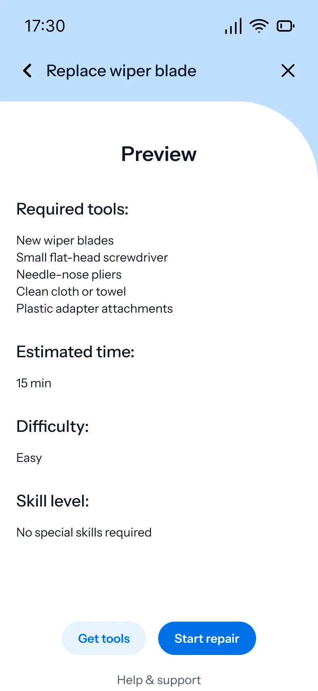
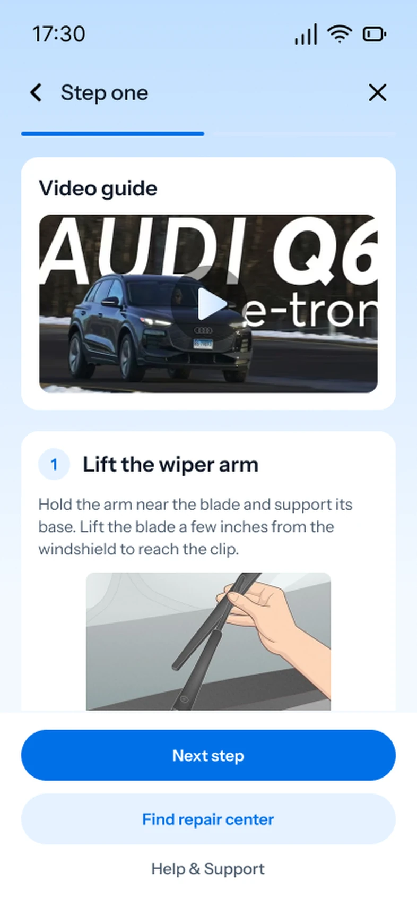
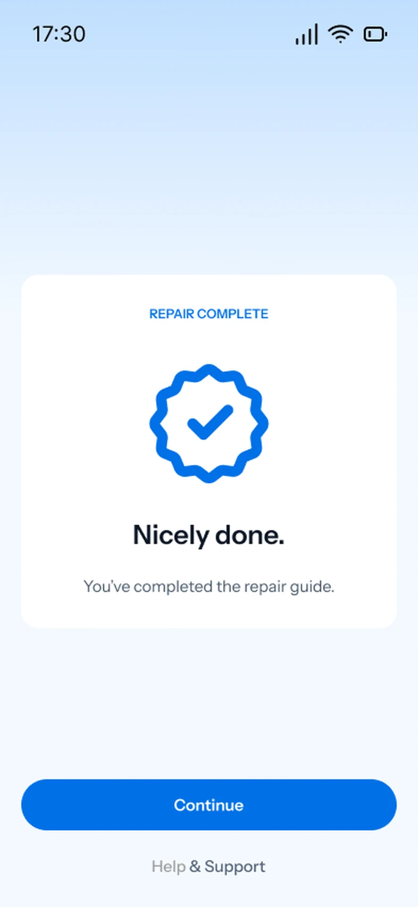
Shops appear in a list or on a map, with filters and a profile for each shop.
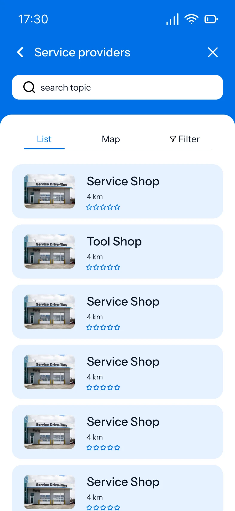
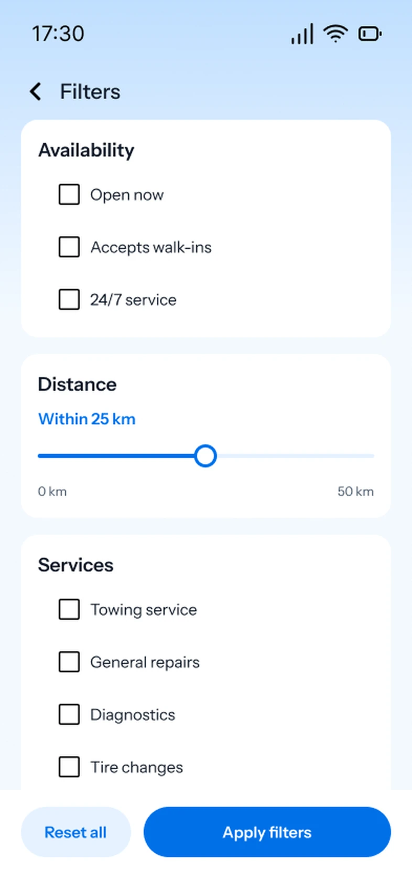
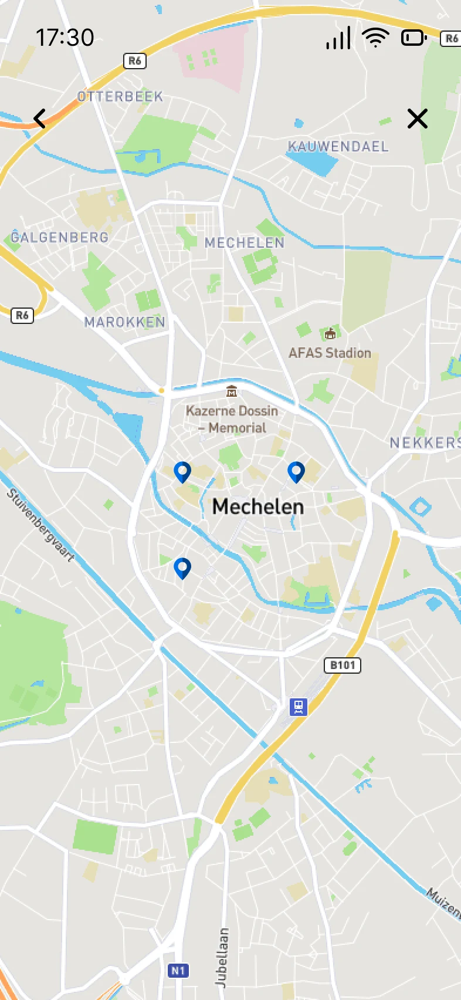
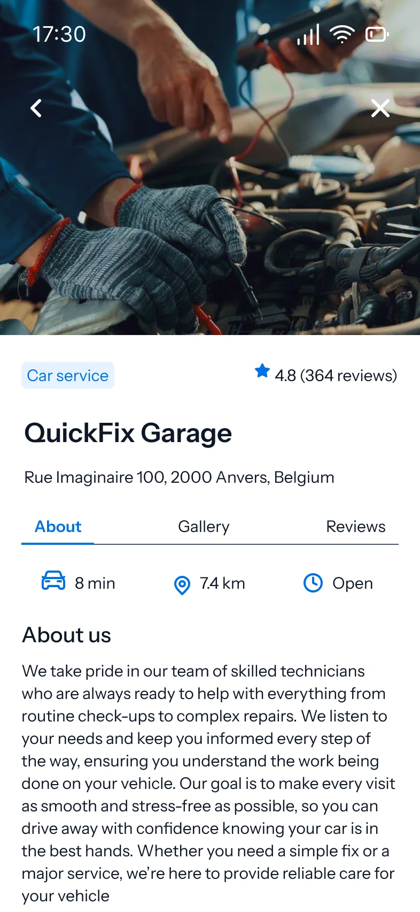
Personal details, vehicles, bookings and downloads, plus help and support.
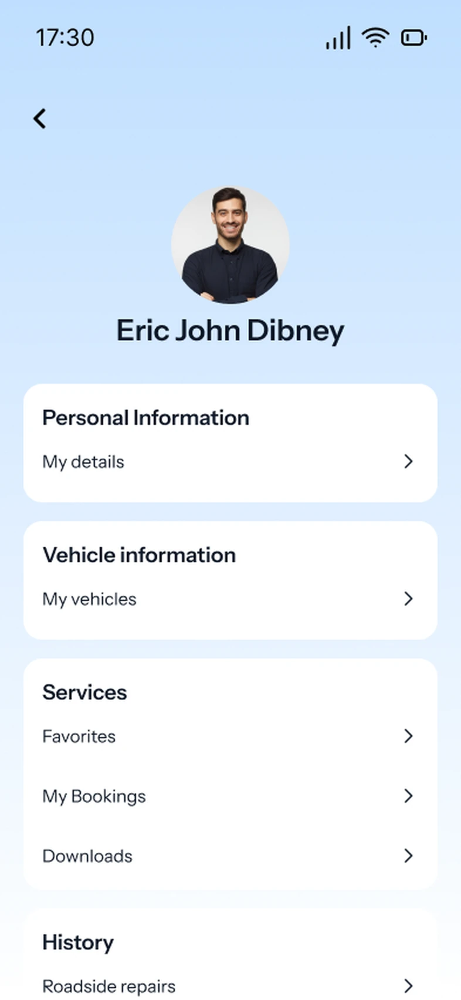
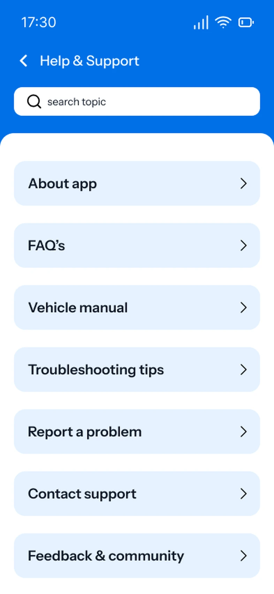
A driver stuck at the roadside has little patience, so every screen had to be clear at a glance, with short steps and plain language.
The app had to work for drivers, repair shops and car brands at once, so the screens and the business model had to fit together.
Test whether people can complete a repair from the steps alone, and where they get stuck.
Have mechanics review the instructions and the diagnostic questions, so the advice is safe and correct.
Test how drivers choose a shop and whether the ratings and filters are enough to trust one.